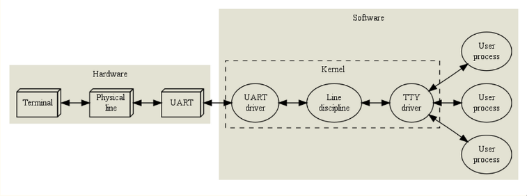

TTY的那些事儿
Sep 28th, 2013 | Comments
前几天帮小妹配VMWare的串口，主要是为了之后如果要写内核debug起来比较方便。其实自己之前在Xen上做HyperCoffer的时候就配过串口了，不过当时是用两台主机通过串口互联搞定的。这次直接利用VMWare的串口写文件，其实原理是差不多的。但是关键问题是：原理到底是什么???
其实在之前调试串口的时候我就很好奇那些/dev目录下面的tty0 - tty6, ttyS0, ttyS1都是些什么东西？还有配置串口的时候在grub里面加的参数是如何得出来的？包括这次在内的两次试验，我都只是通过上网查教材，不停地修改参数、尝试最后才得到适合我的机器的串口参数。
比如在这次调试VMWare串口的时候，我通过VM >> Settings >> add a serial port >> use output file来使得kernel的信息打印到一个外部文件中，然后在VM的grub里面(/etc/default/grub)增加三行：
最后运行：
$ sudo update-grub
然后成功。
但是问题在于这些配置都是什么意思呢？那个ttyS1和tty0是什么东西？19200据说是ttyS1的speed，但是它是怎么得到的？…所有的这些问题我都没有确切的答案，而我唯一做的，就是在网上找了各种资料、教程、配置参数来试着调试，直到找到这种配置发现“诶，居然可以了哦！”，然后，就没有然后了。。。
我觉得我以前一直都处于这种状态，对表面现象的盲目追求，对底层原理的一知半解。这些导致的就是自以为的“健忘”，以及不能对所学到的知识和技能的融会贯通。这次把论文赶完了，终于可以休息一下，想起这件事，就在网上找到一篇文章《The TTY demystified》。认真学习了下，发现真的受益匪浅。一来是作为对知识的梳理，另外一个也是希望拿出来和大家分享一下。以下主要就是对这篇博文的整理归纳翻译，以及一些从其他资料中学到的点点滴滴：
TTY的历史
TTY应该说是TeleTYpe的缩写，teletype中文叫做“电传打字机”，最初被用于传输一些商业电报。当计算机技术发展起来之后，teletype被用于了其输入输出设备。对于多种teletype模型的存在，操作系统内核对一些底层的细节进行了封装，比如word length（字长）, baud rate（波特率）, flow control（流控制）, parity（奇偶校验）, 以及一些基本行编辑（line editing）的控制码（control code）。而对于一些比如Fancy cursor movements（光标移动）, colour output（颜色输出）等高级特性，则在1970s末期由一些物理的video terminal（可视终端）实现了，比如VT-100。
然而现在，除了在博物馆，我们基本上已经见不到这些物理teletype或者可视终端了，现在计算机上的终端基本上都是模拟出来的可视终端（emulated video terminals）。
TTY原理和流程
先来看一个普通的TTY的流程图：

这个流程很直观，用户通过terminal输入，通过电线连到UART (Universal Asynchronous Receiver and Transmitter，通用异步收发器)，然后由它的driver来处理一些包括奇偶校验，流控制在内的数据传输。之后会有两个步骤：
Line discipline: 提供了一个editing buffer和一些基本的编辑命令（如backspace, erase word, clear line, reprint等）。当然这些在line discipline中设置的指令可以在应用程序中被disable。这里有两种mode：前面一种默认的叫cooked (or canonical) mode，它规定了一些默认的对backspace等指令的行为；而一些和用户交互的应用（如编辑器，shell这些依赖于光标和readline的应用）则会把其设置成raw mode，然后由自己来处理这些行编辑命令。Line discipline还有一些控制echo等的选项，这些会在之后更详细地描述。另外，对于每一种串行设备只有一种相应的line discipline（默认的叫N_TTY），其它还有一些用于处理网络包（ppp, IrDA, serial mice）的line discipline，这里就不介绍了。
TTY driver: 主要用于处理比如kill、suspend进程，以及限制输入只能被定向到foreground进程等，其被实现在drivers/char/tty_io.c中。另外和line discipline相似的，TTY driver是一种被动模式，只会通过其它进程或者中断处理函数来调用。
于是我们平常所说的TTY设备其实主要就是由UART driver, line discipline和TTY driver这三部分组成的。用户可以通过login来成为某个tty的owner，然后通过对/dev下tty文件的读写来操作相应的TTY设备。
接下来看看一个典型的桌面系统（Linux）的TTY是怎么样的：

和前面一张图相比，TTY driver和line discipline还是一样的, 但是UART和物理终端没了，取而代之的则是一个由软件模拟的可视终端，由keyboard输入，从VGA输出。另外如果我们把模拟终端移到用户层（比如xterm），则会变成下面这张图：

这里引进了一个虚拟终端（pseudo terminal or pty）的概念。为了解释清楚这些，我们先退一步，来看看这些都是如何在当前操作系统的进程模型下工作的。
TTY与进程模型

我们知道，一个进程可能会有5种状态：
R Running or runnable (on run queue)
D Uninterruptible sleep (waiting for some event)
S Interruptible sleep (waiting for some event or signal)
T Stopped, either by a job control signal or because it is being traced by a debugger.
Z Zombie process, terminated but not yet reaped by its parent.
我们通过运行ps l：

可以通过STAT来查看当前的状态。其中s表示这是一个session leader（一般是一个shell），+表示这是一个foreground进程。另外还可以看到每个进程都对应了一个tty（TTY那列），这里显示的都是pts（后面会提到）。
一般driver中的TTY是通过signal来和process进行异步的通信的，我们可以通过运行kill -l来查看系统中有哪些signal：

而下面主要列出了这几个有关的signals：SIGHUP, SIGINT, SIGQUIT, SIGPIPE, SIGCHLD, SIGSTOP, SIGCONT, SIGTSTP, SIGTTIN, SIGTTOU and SIGWINCH.


我们来看一个例子：
假设你在vim上编辑一个文件，光标停在屏幕的中间某个位置，而vim这时正在运行着一些操作（比如查找等）。这个时候你按下一个Ctrl-z，由于vim的line discipline有一条规则来拦截这个Ctrl-z，你不需要等待vim运行完它的查找操作再从TTY中读取Ctrl-z这个字符（ASCII 26），line discipline会直接发一个SIGTSTP到foreground进程组（包含了vim这个进程）。由于vim本身注册了SIGTSTP的处理函数，于是内核就会开始运行这个处理函数，它可能会把光标移到屏幕的最后，往TTY设备中写一些相关的控制信息，再向自己的进程组发送一个SIGSTOP，这个时候vim进程就被stop了。session leader（可能是/bin/bash)通过SIGCHLD收到vim进程被suspend的信息，向TTY设备读取当前的一些配置文件（之后恢复foreground进程用的），然后通过ioctl使自己成为该TTY的foreground进程，在屏幕上打印一些提示信息，比如
[1] + suspended vim xx
告诉用户这个vim进程被suspend了。
这个时候，如果你运行ps，你会看到vim进程是stopped的状态（“T”）。如果我们通过bg或者kill SIGCONT pid来唤醒它，vim会开始执行它的SIGCONT处理函数，该处理函数可能会需要通过写TTY设备重新画GUI界面，但是由于vim这个时候是一个background的进程，TTY设备不允许一个background进程的输出，相反，它会发送一个SIGTTOU给vim，再次stop它，再通过SIGCHLD把执行权交给session leader，打印提示信息:
[1] + continued vim xx
[1] + suspended (tty output) vim xx
而如果我们用fg命令，shell就会首先恢复之前保存的配置文件，告诉TTY driver从现在开始要把vim作为foreground进程来看待，最后通过发送SIGCONT来重新开始运行vim。
TTY设备的配置
可以通过命令tty来查看你当前的shell对应于那个tty：

另外，我们也可以通过命令行工具stty来操作TTY设备：

-a告诉stty打印所有当前shell对应的TTY的所有设置，当然也可以通过-F来打印其它TTY的设置（参看stty文档）。在这些设置中有一些是和UART相关的参数（比如speed），一些是和line discipline相关的（比如第二行的输出），还有一些是用于job control。我们来一一解释：
speed 9600 baud; rows 58; columns 204; line = 0;
| Attribute | Related part | Description |
|---|---|---|
| speed | UART | The baud rate. Ignored for pseudo terminals. |
| rows,columns | TTY driver | Somebody’s idea of the size, in characters, of the terminal attached to this TTY device. |
| line | Line discipline | The line discipline attached to the TTY device. 0 is N_TTY. Listed in /proc/tty/ldiscs. |
比如我们可以尝试下：开一个xterm（通过tty得到其TTY设备为/dev/pts/2），运行stty -a得到它对应的row（59）和columns（207），打开一个vim，vim会根据TTY设备当前的rows和columns设置来填充窗口。然后我们在另外一个shell中输入：
stty -F /dev/pts/2 rows 30
它会更新内核内存中相应TTY（/dev/pts/2）的数据结构，然后发送一个SIGWINCH给vim，使得其重画界面。然后你再去看原来那个vim的窗口，发现它的row变成了原来的一半！
stty -a的第二行列出了一些特殊字符：
intr = ^C; quit = ^\; erase = ^?; kill = ^U; eof = ^D; eol = M-^?; eol2 = M-^?; swtch = <undef>; start = ^Q; stop = <undef>; susp = ^Z; rprnt = ^R; werase = ^W; lnext = ^V; flush = ^O; min = 1; time = 0;
我们再来做一个实验：
打开一个新的xterm，输入：
stty intr o
我们用o，代替了Ctrl-c，来向foreground发送SIGINT，于是之后你按Ctrl-c将不会中断foreground进程，而如果你开一个cat，输入”hello”，则会在按下’o’的时候发现cat被中断了！
最后stty -a列出了一系列的”switch”，它们的排序是没有特定顺序的，一些是UART相关的，一些是会影响line discipline的，等等。-表示这个switch是被关闭的。这里简单介绍几个：
icanon表示使用canonical（line-based）模式，如果你把它关掉：
stty -icanon; cat
那么你现在输入一些字符（比如backspace）将会不再和之前那样work了。
echo表示开启echo模式，如果你把它给关了：
stty -echo; cat
你如果再输入，由于echo模式没了，屏幕上将不会同步打印出你输入的字符了。不过由于我们现在处于cooked（canonical）模式，和line editing相关的东西还是有用的，一旦你敲了enter键，line discipline会把编辑好的buffer传递给cat，再整行打印出来。
tostop可以控制background的job是否被允许向终端写：
stty tostop; (sleep 5; echo hello, world) &
5秒之后, 该job会尝试着向TTY进行写，由于tostop被设置了，所以不允许background向TTY进行写，像前面提到的那样，shell输出：
[1] + continued (; sleep 5; echo hello, world; )
[1] + suspended (tty output) (; sleep 5; echo hello, world)
而如果我们运行：
stty -tostop; (sleep 5; echo hello, world) &
5秒后将会打印出”hello world“，并输出：
[1] + done (; sleep 5; echo hello, world; )
前面讲了一些关于TTY的历史，原理，配置等，接下来我们来说下tty，pty，pts，ttys，console等的区别，主要参考和摘录了Tekkaman Ninja的博文：
现在的个人计算机一般只有一个控制台，没有终端。当然愿意的话，可以在串口上连一两台物理终端。但是Linux按POSIX标准把个人计算机当成小型机来用,在控制台上通过getty软件虚拟了六个字符哑终端（或者叫虚拟控制台终端tty1-tty6，数量可以在/etc/inittab里自己调整）和一个图型终端，在虚拟图形终端中又可以通过软件(如screen，tmux)再虚拟无限多个伪终端（pts/0等）。但这全是虚拟的,虽然用起来一样,但实际上没有物理实体。所以在个人计算机上,只有一个实际的控制台,没有终端,所有终端都是在控制台上用软件模拟的。
系统控制台 —— /dev/console
/dev/console是系统控制台，是与操作系统交互的设备。系统所产生的信息会发送到该设备上。平时我们看到的PC只有一个屏幕和键盘，它其实就是控制台。目前只有在单用户模式下，才允许用户登录控制台/dev/console。（可以在单用户模式下输入tty命令进行确认）。
console有缓冲的概念，为内核提供打印输出。内核把要打印的内容装入缓冲区，然后由console来决定打印到哪里（比如是tty0还是ttySn等）。
某些情况下console和tty0是一致的，就是当前所使用的是虚拟终端，所以有些资料中称/dev/console是到/dev/tty0的符号链接，但是这样说现在看来是不对的：根据内核文档，在2.1.71之前，/dev/console根据不同系统设定，符号链接到/dev/tty0或者其他tty上，在2.1.71版本之后则完全由内核代码内部控制它的映射。
当前控制台 —— /dev/tty
这是应用程序中的概念，如果当前进程有控制终端，那么/dev/tty就是当前进程控制台的设备文件。对于你登录的shell，/dev/tty就是你使用的控制台，设备号是（5,0）。不过它并不指任何物理意义上的控制台，/dev/tty会映射到当前设备（使用命令“tty”可以查看它具体对应哪个实际物理控制台设备）。输出到/dev/tty的内容只会显示在当前工作终端上（无论是登录在ttyn中还是pty中）。你如果在控制台界面下(即字符界面下）那么dev/tty就是映射到dev/tty1-6之间的一个（取决于你当前的控制台号），但是如果你现在是在图形界面（Xwindows），那么你会发现现在的/dev/tty映射到的是/dev/pts的伪终端上。
你可以输入命令tty，将显示当前映射终端如：/dev/tty1或者/dev/pts/0等。也可以使用命令ps l来查看其他进程与哪个控制终端相连。
虚拟控制台 —— /dev/ttyn
/dev/ttyn是进程虚拟控制台，他们共享同一个真实的物理控制台。
如果在进程里打开一个这样的文件且该文件不是其他进程的控制台时，那该文件就是这个进程的控制台。进程printf数据会输出到这里。在PC上，用户可以使用alt+Fn切换控制台，看起来感觉存在多个屏幕，这种虚拟控制台对应tty1~n。
还有一个比较特殊的/dev/tty0，他代表当前虚拟控制台，是当前所使用虚拟控制台的一个别名。因此不管当前正在使用哪个虚拟控制台（注意：这里是虚拟控制台，不包括伪终端），系统信息都会发送到/dev/tty0上。只有系统或超级用户root可以向/dev/tty0进行写操作。tty0是系统自动打开的，但不用于用户登录。
伪终端 —— pty（pseudo-tty）
伪终端(Pseudo Terminal)是终端的发展，为满足现在需求（比如网络登陆、xwindow窗口的管理）。它是成对出现的逻辑终端设备（即master和slave设备，对master的操作会反映到slave上）。它多用于模拟终端程序，是远程登陆(telnet、ssh、xterm等)后创建的控制台设备。
历史上，有两套伪终端软件接口：
- BSD接口：较简单，master为/dev/pty[p-za-e][0-9a-f]；slave为/dev/tty[p-za-e][0-9a-f]，它们都是配对的出现的。例如/dev/ptyp3和/dev/ttyp3。但由于在编程时要找到一个合适的终端需要逐个尝试，所以逐渐被放弃。
- Unix 98接口：使用一个/dev/ptmx作为master设备，在每次打开操作时会得到一个master设备fd，并在/dev/pts/目录下得到一个slave设备（如
/dev/pts/3），这样就避免了逐个尝试的麻烦。由于可能有好几千个用户登陆，所以/dev/pts/*是动态生成的。第一个用户登陆，设备文件为/dev/pts/0，第二个为/dev/pts/1，以此类推。它们并不与实际物理设备直接相关。现在大多数系统是通过此接口实现pty。
我们在X Window下打开的终端或使用telnet或ssh等方式登录Linux主机，此时均通过pty设备。例如，如果某人在网上使用telnet程序连接到你的计算机上，则telnet程序就可能会打开/dev/ptmx设备获取一个fd。此时一个getty程序就应该运行在对应的/dev/pts/*上。当telnet从远端获取了一个字符时，该字符就会通过ptmx、pts/*传递给 getty程序，而getty程序就会通过pts/*、ptmx和telnet程序往网络上返回“login:”字符串信息。这样，登录程序与telnet程序就通过伪终端进行通信。
telnet<--->/dev/ptmx(master)<--->pts/*(slave)<--->getty
如果一个程序把pts/*看作是一个串行端口设备，则它对该端口的读/写操作会反映在该逻辑终端设备对的另一个/dev/ptmx上，而/dev/ptmx则是另一个程序用于读写操作的逻辑设备。这样，两个程序就可以通过这种逻辑设备进行互相交流，这很象是逻辑设备对之间的管道操作。对于pts/*，任何设计成使用一个串行端口设备的程序都可以使用该逻辑设备。但对于使用/dev/ptmx的程序，则需要专门设计来使用/dev/ptmx逻辑设备。
串口终端 —— /dev/ttySn
串行端口终端是使用计算机串行端口连接的终端设备。计算机把每个串行端口都看作是一个字符设备。有段时间串行端口设备通常被称为终端设备，那时它的最大用途就是用来连接终端，所以这些串行端口所对应的设备名称是/dev/tts/0（或/dev/ttyS0）、/dev/tts/1（或/dev/ttyS1）等，设备号分别是（4,0）、（4,1）等（对应于win系统下的COM1、COM2等）。若要向一个端口发送数据，可以在命令行上把标准输出重定向到这些特殊文件名上即可。
例如，在命令行提示符下键入echo hello > /dev/ttyS1会把“hello”发送到连接在ttyS1（COM2）端口的设备上。
总结
最后Tekkaman Ninja的博文中有一张图这里借用下，感觉很赞！非常清晰地解释了这几个终端之间的关系：
最后我们回到最早的那个配置文件/etc/default/grub：
可以看到这里就是将/dev/console定向到了tty0和ttyS1（至于如何知道是ttyS1还是ttyS0的，可以通过dmesg | grep tty来得到，或者用setserial来获取串口的信息）。另外串口的speed可以通过我们之前说的stty -a -F /dev/ttyS1来获得，其它的一些参数都是和UART driver相关的，这里就不详细解释了。
以上这些就是我这两天学到的和TTY相关的知识，真的很感谢Linus Åkesson和Tekkaman Ninja的整理、归纳和分享。
P.S. 之前写了几篇英文博客，感觉不是很好。主要是因为在那些博文中很大一部分是直接引用别人的（自己写的话还不如直接用别人的能让人看得懂）；究其原因的话主要还是因为自己的英文太弱吧！